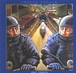

| Artist: | King Crimson |
| Title: | Vrooom Vrooom |
| Label: | Discipline Global Mobile DGM0105 |
| Length(s): | 60+68 minutes |
| Year(s) of release: | 2001 |
| Month of review: | [02/2002] |
| 1) | VROOOM VROOOM | 5.01 |
| 2) | Coda: Marine 475 | 2.44 |
| 3) | Dinosaur | 5.05 |
| 4) | B'Boom | 4.51 |
| 5) | THRAK | 6.39 |
| 6) | The Talking Drum | 4.03 |
| 7) | Larks' Tongues In Aspic (part II) | 6.13 |
| 8) | Neurotica | 3.40 |
| 9) | Prism | 4.24 |
| 10) | Red | 7.03 |
| 11) | Improv: Biker Babes Of The Rio Grande | 2.27 |
| 12) | 21st Century Schizoid Man | 7.37 |
Disc 2:
| 1) | Conundrum | 1.57 |
| 2) | Thela Hun Ginjeet | 6.44 |
| 3) | Frame By Frame | 5.12 |
| 4) | People | 6.12 |
| 5) | One Time | 5.52 |
| 6) | Sex Sleep Eat Drink Dream | 4.55 |
| 7) | Indiscipline | 7.16 |
| 8) | Two Sticks | 1.50 |
| 9) | Elephant Talk | 5.14 |
| 10) | Three Of A Perfect Pair | 4.16 |
| 11) | B'boom | 3.47 |
| 12) | THRAK | 6.43 |
| 13) | Free As A Bird | 3.03 |
| 14) | Walking On Air | 5.35 |
B'Boom is soundscapes with a drumsolo. THRAK opens with sinister sounds and the grind of guitar. Then we get some dissonance on "piano" followed by eerie sounds on guitar and a zooming bass. A bit of an industrial sound here.
Talking Drum has a groovy busy bass and loosely rumbling percussion. In between I hear some violinic sounds. The music gets to be quite chaotic here with the pace and hecticness going up.
It is followed by the well-known Larks' Tongues In Aspic (Part II). This is still a great song with its memorable riffs and the band goes for it with a vengeance. It strikes me that the band plays with music more than that they play the music.
Neurotica is simply neurotic, Prism features lots of fast percussion, while Red, recently covered by Niacin, is still one of my favourite King Crimson tracks.
After a short soundscape plus percussion improvisation (nice title), 21st Century Schizoid Man is on the loose again. I shall get into details here: we all know the song.
The second disc is of a different type and does not have the wonderful appeal of the previous disc. It is less focused on power and more on songs. After the loud percussion of Conundrum, we run into the jungle chant of Thela Hun Ginjeet with Belew up front. In addition to a strong groove, there is also a filmic intermezzo. Frame By Frame is another pop tune with the lazy somewhat whining voice of Belew. People is percussive and catchy. The ending is quite slow again with distorted guitars, but the whole of it ends in bombast again.
After the slow but touching ballad One Time we come into Sex Sleep Eat Drink Dream, repetitive, noisy and angular this is an active one with plenty of neurotics. Indiscipline finds us with more manicness, Two Sticks is simply bass and stick (or whatever), skipping over the manic bass of the talkative Elephant Talk. The unstable middle part is quite distinctive. Again a song with a groove and a alsmot chant like Belew. Very Talking Heads. Three Of A Perfect Pair follows with its catchiness and B'Boom is here for the re-run. THRAK is rough (nice to heavy on this both more freaky but also more poppy side of the double disc). Free As A Bird is advertised as coming from Belewprints also reviewed on these pages. A nice and slow ballad. Walking On Air is the closer and recorded in Los Angeles on June 30 1995. This is a slow and sultry ballad, with a Hawaiian sound.